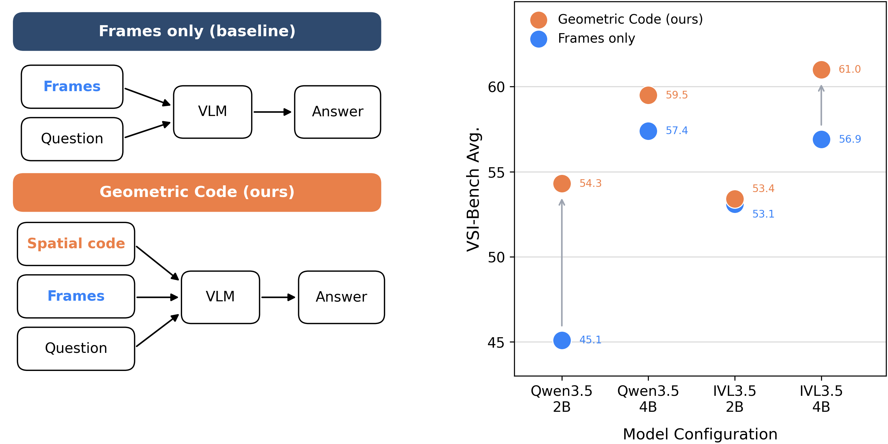

Paper Notes
Problem and Representation
VLM 通常能识别视频中出现了什么，却难以稳定回答距离、尺寸、出现顺序和跨帧身份。本文不把几何知识隐式塞进模型，而是把视频转成可检查的 spatial code。
输入是单目 RGB 视频和任务词表；输出包括对象位置、尺寸、数量、对象间距离、出现顺序与房间几何，再序列化进 prompt。
Paper Notes
Reading Figure 1 and the Pipeline

Antonio Jun et al. · Original figure, unmodified · CC BY 4.0 · Paper & Caption ↗
图 1 的流程是 SAM-3 分割/分类，DA-3 恢复深度、相机姿态和内参，几何引擎将点云反投影、合并和清理，最后把代码与视频一起交给 VLM。
每帧检测身份只在帧内有效，系统通过几何和外观规则跨帧合并。对象尺寸用最佳观测估计，室内竖直轴固定为重力方向，水平轴由 PCA 得到。
Paper Notes
Input Conditions and Geometry Code
作者比较 frames only、code only、frames+code 三种输入。code-only 对可直接从几何计算的任务有帮助，但对依赖视觉语境的多选题和外观判断可能下降。
这使得作用边界比较清楚：显式几何是可解释的度量接口，不是一个通用语义 memory。
Paper Notes
Experiments on VSI-Bench
实验使用 Qwen3.5 和 InternVL3.5 的 2B/4B 版本，在 VSI-Bench 评估。四模型 frames-only 平均 53.1，code-only 53.3，frames+code 57.1；Qwen3.5-2B 从 45.1 提升到 54.3，InternVL3.5-4B 从 56.9 提升到 61.0。
绝对距离任务由 frames-only 的 34.2–43.2 提升到 code-only 的 65.4–67.3，说明几何引擎能直接补足度量信息；但 object count/size/appearance order 不一定随 code-only 变好。
| Input | Mean Accuracy | Interpretation |
|---|---|---|
| Frames only | 53.1 | 视觉基线 |
| Code only | 53.3 | 几何可读但缺少视觉上下文 |
| Frames + Code | 57.1 | 几何与视觉互补 |
Paper Notes
Training, Cost, and Limits
方法没有训练或 fine-tuning。SAM-3 和 DA-3 的误差会进入确定性几何引擎；对度量任务，VLM 很大程度是在读取代码，因此该提升不能完全归因于 VLM 的空间推理能力。
它不是流式地图 memory，也没有验证几何代码反向改善深度或位姿。对 LingBot-Map 的启发是把语义/几何状态设计成显式可检查接口，但要避免用后处理文本替代真正的几何反馈。
Paper Notes
Transfer to Semantic Guidance
在我们的系统中，可以把当前帧和历史 token 聚合成 object/region code，作为 memory update 的辅助证据。关键实验应比较 raw visual、geometry-only、semantic-only 和 geometry+semantic，并保持缓存预算一致。
若 code 只改善下游问答而不改善未来帧深度/点云误差，就只能宣称空间查询收益，不能宣称重建收益。
Discussion
Reading Questions
Does code-only replace video?
不能。它对度量任务强，但对计数、外观和多选空间问题需要原始视觉。
Is this semantic memory?
不是。它是显式几何上下文，几乎没有可学习的长期写入机制。
What is the value for LingBot-Map?
提供可解释的几何/语义接口和清晰的“当前输出改善 vs memory 改善”区分。
References
First submitted 2026-09-28. Read 2609.34148v1 on 16 November 2026. One original figure is reproduced under CC BY 4.0. Experimental results are reported by the authors and have not been independently reproduced.
Verified on 2026-11-16. Paper results refer to the linked versions. Repository references were checked on this date.